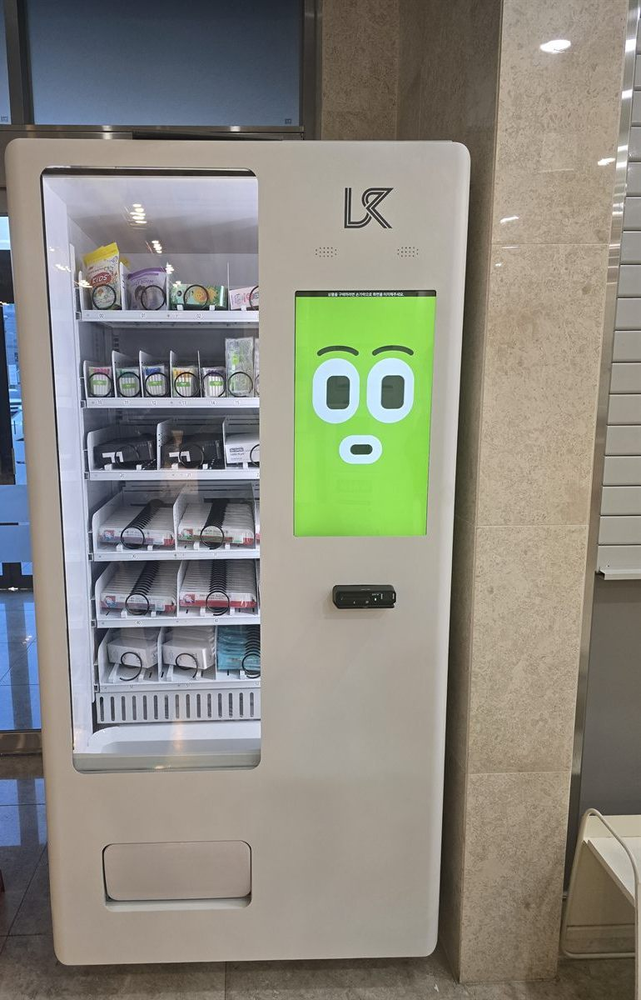

치과에 자판기를 놓겠다고 하시면 음료 자판기를 떠올리시는 분이 많습니다. 그런데 실제로 치과에서 잘 도는 것은 음료가 아니라 구강용품입니다. 이유는 간단합니다. 진료가 끝난 직후가 그 물건을 가장 사고 싶은 순간이기 때문입니다. 스케일링을 받고 나오면서, 교정 장치를 끼고 나오면서 "이런 칫솔 쓰세요", "치간칫솔 하나 챙기세요" 하는 말을 듣고 나온 분이 그 자리에서 바로 집어 갑니다. 데스크에서 일일이 꺼내 주고 계산하던 일을 기계가 대신하는 구성입니다. 사진이 그 모습입니다.
자리를 보러 가서 확인한 것은 세 가지였습니다. 첫째는 대기실 동선입니다. 치과 대기실은 생각보다 좁고, 데스크·대기 의자·진료실 문이 한 공간에 몰려 있습니다. 기계를 데스크 정면에 세우면 접수하는 분과 자판기 앞에 선 분이 겹칩니다. 그래서 진료를 마치고 나오는 쪽 벽면, 그러니까 데스크로 가는 길에 자연스럽게 지나치되 서 있어도 길을 막지 않는 자리를 골랐습니다. 둘째는 전원입니다. 치과는 의료 장비가 물려 있는 회로가 따로 있어서, 아무 콘센트나 쓰면 안 되는 건물이 있습니다. 분전반에서 차단기를 확인하고 장비 회로와 겹치지 않는 쪽으로 잡았습니다. 셋째는 바닥 수평입니다. 사진처럼 병원 로비는 타일이나 석재 마감이 많아 눈으로는 평평해 보여도 배수 때문에 미세하게 기울어 있는 곳이 있습니다. 수평계를 올려 다리를 돌려 잡았습니다. 기울면 떨어지는 품목이 칸 안에서 걸립니다.
노원 치과에 맞는 구성
칸 배치는 사진처럼 위아래를 성격이 다르게 짰습니다. 윗칸은 봉지에 든 가벼운 품목, 그러니까 어린이용 치실이나 낱개 포장 제품을 세워 넣었습니다. 가벼운 것은 스프링이 돌아도 잘 안 떨어지는 경우가 있어서 앞쪽으로 당겨 세우는 것이 중요합니다. 가운데 칸은 치간칫솔이나 칫솔처럼 길쭉하고 모양이 일정한 것을 걸었습니다. 이쪽은 스프링 칸이 가장 잘 맞습니다. 아래 칸은 상자에 든 것, 두께가 있는 것을 넣었습니다. 무거운 것을 아래에 두면 기계가 덜 흔들리고, 떨어지는 높이도 줄어 포장이 덜 상합니다.
치과 구강용품은 품목 하나하나가 작기 때문에 칸을 잘게 쓰는 대신 수량을 넉넉히 넣는 쪽으로 갔습니다. 대신 처음부터 모든 칸을 다 채우지는 않았습니다. 한 달 정도 팔아 보고 안 나가는 품목은 빼고 잘 나가는 것은 칸을 늘리는 쪽이 재고를 안 묵히는 방법입니다. 결제는 카드와 삼성페이·카카오페이·네이버페이를 받고 현금함은 넣지 않았습니다. 병원에서 잔돈을 채우고 수거하는 일이 없어집니다. 재고와 매출은 휴대폰에서 바로 확인할 수 있게 하고, 어느 칸이 품절인지 알림이 오도록 설치 당일에 맞춰 봤습니다. 데스크 직원분이 자판기 때문에 따로 할 일이 생기지 않는 것, 이게 병원 설치에서는 가장 중요한 조건입니다.
치과 구강용품 자판기, 좋은 점과 어려운 점
좋은 점부터 적겠습니다. 첫째, 데스크 업무가 줄어듭니다. 물건을 꺼내고 값을 받고 영수증을 끊던 일이 기계로 넘어갑니다. 접수와 수납이 몰리는 시간에 이게 꽤 체감됩니다. 둘째, 사는 순간을 놓치지 않습니다. 진료실에서 들은 권유가 기억에 남아 있는 그 자리에서 바로 살 수 있습니다. 셋째, 진료비와 물품 대금이 섞이지 않습니다. 계산이 따로 돌아가니 정산이 단순해집니다. 넷째, 진료 시간이 끝난 뒤에도 돌아갑니다. 야간진료를 하거나 상가 건물 공용부에 가까운 치과라면 이 부분이 의미가 있습니다.
어려운 점도 솔직히 적습니다. 첫째는 품목 선정입니다. 병원에서 권하는 제품과 자판기에 넣기 좋은 포장이 항상 같지는 않습니다. 너무 얇거나 너무 말랑한 포장은 칸에서 잘 안 떨어집니다. 넣기 전에 실제로 한 번씩 떨어뜨려 보셔야 합니다. 둘째는 단가 문제입니다. 구강용품은 하나 값이 음료보다는 높지만 회전은 느립니다. 하루 환자 수가 적은 병원이라면 기계값 회수에 시간이 걸립니다. 셋째는 자리입니다. 대기실이 정말 좁은 치과는 기계를 세울 벽면 자체가 안 나옵니다. 넷째는 유통기한이 있는 품목입니다. 구강청결제나 일부 소모품은 날짜가 있어 재고를 쌓아 두면 안 됩니다. 다섯째, 환불 응대입니다. 걸렸을 때 누가 대응할지를 처음에 정해 두지 않으면 데스크 쪽 일이 되어 버립니다. 저희는 원격으로 칸을 확인하고 환불 처리하는 방법을 설치 당일에 같이 알려 드립니다.
노원 무인매장, 이런 자리가 잘 됩니다
노원구는 서울 동북권에서 대규모 주거지와 학원가, 대학과 병원이 한데 모여 있는 지역입니다. 자판기 자리도 성격이 꽤 갈립니다. 첫째는 중계동 은행사거리 학원가입니다. 서울 동북권에서 손꼽히는 학원 밀집지라 저녁 시간대에 학생 통행이 몰리는 동선이 분명합니다. 둘째는 노원역 일대입니다. 4호선과 7호선이 만나는 환승역이라 유동 인구가 많고, 역 주변으로 상가 건물이 이어집니다. 셋째는 공릉동과 월계동의 대학가입니다. 서울과학기술대학교(서울과기대)와 삼육대학교, 서울여자대학교, 광운대학교가 이 일대에 있어 학기 중과 방학의 차이가 큰 대신 학기 중 수요가 확실한 자리가 많습니다.
그 밖에 문의가 꾸준한 자리는 상계동과 하계동의 병원·의료 상가, 상계주공 일대의 아파트 단지 상가, 마들역·중계역·하계역 주변 근린상가, 태릉입구역과 석계역 방면 사무 시설, 그리고 수락산·불암산 등산로 입구 쪽 상권입니다. 같은 노원이라도 학원가처럼 저녁에 사람이 몰리는 곳과 병원 상가처럼 낮에 도는 곳은 넣는 품목이 반대로 갑니다. 그래서 상담 때는 주소보다 그 자리에 사람이 몇 시에 가장 많은지를 먼저 여쭙습니다. 도봉구 창동·쌍문 방면과 성북구 석계·장위 쪽, 중랑구 묵동 방면, 경기 의정부·남양주 별내는 한 번 나가는 길에 같이 보는 일이 많습니다.
노원 서비스 지역
노원구 — 상계동 · 중계동 · 하계동 · 공릉동 · 월계동 · 상계1동~상계10동 · 중계본동 · 중계1동 · 중계2·3동 · 중계4동 · 하계1동 · 하계2동 · 공릉1동 · 공릉2동 · 월계1동 · 월계2동 · 월계3동
역 — 노원역 · 상계역 · 마들역 · 수락산역 · 중계역 · 하계역 · 공릉역 · 태릉입구역 · 석계역 · 광운대역 · 월계역 · 녹천역
주요 시설 — 중계동 은행사거리 학원가 · 노원역 상권 · 서울과기대 · 광운대 · 삼육대 · 서울여대 · 상계동 의료 상가 · 수락산 · 불암산
인접 — 도봉구(창동 · 쌍문) · 성북구(석계 · 장위) · 중랑구(묵동 · 상봉) · 강북구 · 경기 의정부 · 남양주 별내 방면
서울 전역(동북권 · 도심권 · 강남권 · 서남권 · 서북권)과 경기 의정부 · 남양주 · 구리까지 같은 조건으로 나갑니다.
노원 무인창업, 이렇게 시작하시면 됩니다
설치비는 받지 않습니다. 자리 확인부터 품목 구성, 기계 반입, 카드 결제 연동, 재고 채우는 방법까지 한 번에 안내해 드립니다. 치과나 병원처럼 진료 공간 안에 들어가는 자리는 기계 크기보다 대기 동선을 안 막는 것이 먼저입니다. 견적 전에 확인하는 것은 전기 위치·벽면 폭·반입 경로 세 가지입니다. 상가 건물 안 병원은 엘리베이터 크기와 복도 폭에 따라 들어가는 기계가 달라지니 미리 봅니다. 대기실 사진 한 장과 대략의 벽면 폭만 보내 주셔도 들어갈지 아닐지는 미리 봐 드립니다.
비용은 구입이 렌탈보다 유리한 편입니다. 렌탈료를 몇 년 내는 것보다 처음에 사 두는 쪽이 총액이 낮게 나오는 경우가 많고, 오래 쓸수록 차이가 벌어집니다. 다만 임차 기간이 짧게 남았거나 확장·이전 계획이 있는 경우라면 렌탈을 함께 비교해 보시는 편이 낫습니다. 구성별 36개월 총비용은 구입 vs 렌탈 비교 가이드에 정리해 두었습니다.
관련 검색어: 노원무인자판기 · 노원무인자판기설치 · 노원치과자판기 · 중계동자판기 · 상계동자판기
노원 무인자판기 설치 상담
세워 둘 자리 사진 한 장만 보내 주셔도 됩니다. 남는 벽과 전기 위치, 대기 동선과 반입 경로를 보고 들어갈 수 있는 크기와 대수를 먼저 봐 드린 뒤 견적을 보내 드립니다.
※ 사진은 픽포스가 시공한 설치 사례이며, 글에 적힌 지역의 현장 사진은 아닙니다. 자판기 구성과 품목은 자리와 업종에 따라 달라지며, 병원 내부 설치는 전원 회로와 대기 동선, 반입 경로를 현장에서 먼저 확인합니다. 정확한 금액은 견적서로 안내드립니다.